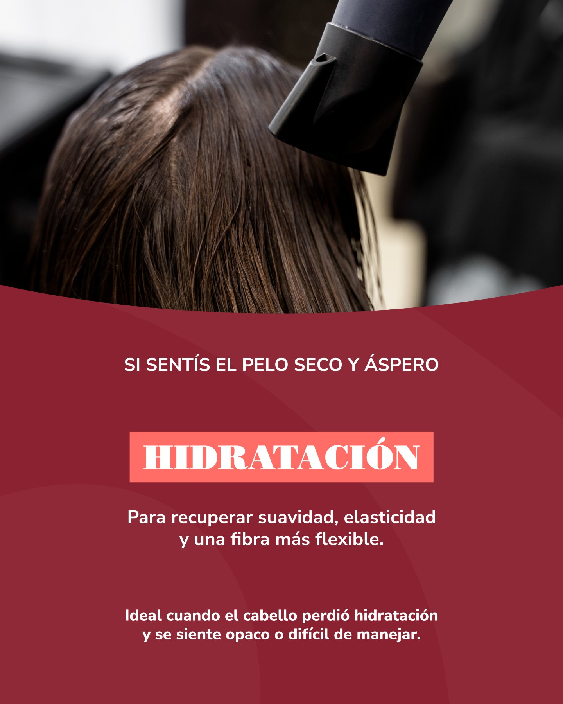
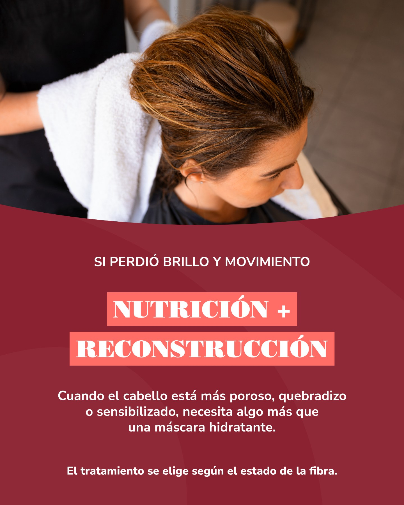
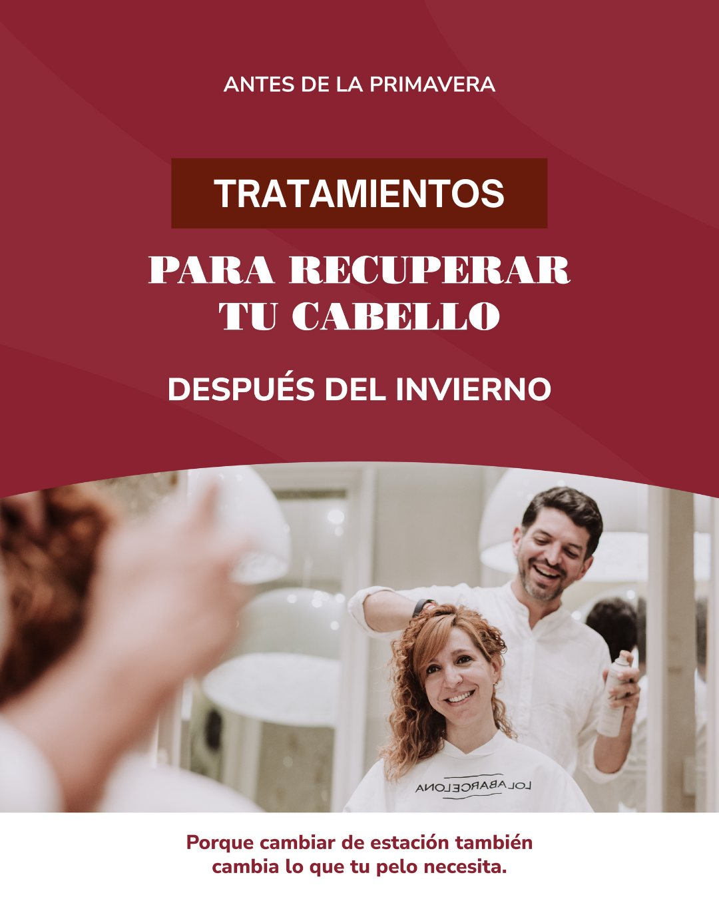

Sentirse bien,estar bien
Peluquería & estética en San Miguel de Tucumán. Balayage, corte y cuidado capilar en un mismo lugar.
El color empieza en vos
Balayage y cuidado capilar: dos formas de pensar tu pelo, juntas.
Diagnóstico
Entender cómo está tu cabello es el punto de partida para pensar el color y el tratamiento.
Técnica
Balayage para trabajar el color. Corte y peinados para acompañarlo.
Cuidado en casa
El cuidado continúa con una rutina que acompañe la hidratación, la nutrición y la reconstrucción capilar.
En el salón
- Balayage
- Corte
- Peinados
- Hidratación
- Nutrición y reconstrucción
- Tratamientos Kérastase y Fusio-Dose
Cuidar es elegir
No todo cabello necesita lo mismo. Hidratación, nutrición y reconstrucción: mirá cómo lo cuenta el salón en sus propias publicaciones.
Tocá las imágenes para leer cada placa en detalle.


Hidratación
Para el pelo que se siente seco y áspero.


Nutrición y reconstrucción
Una mirada al estado de la fibra capilar.


Tratamientos capilares
El cuidado también acompaña los cambios de estación.
Kérastase en el salón
Tratamientos Kérastase y Fusio-Dose, parte del cuidado capilar de LolaBarcelona.
El diagnóstico orienta el tratamiento. La hidratación, la nutrición y la reconstrucción responden a distintas necesidades del cabello.
Kérastase · Fusio-DosePuertas adentro
El salón, el equipo y el cuidado del cabello, en imágenes de LolaBarcelona.


Nos encontrás acá
Para organizarte
Lunes a sábado
de a